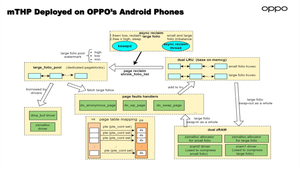

Two talks on multi-size transparent huge page performance
Reliable mTHP allocation
The first session was presented remotely by Barry Song, who has been working at Oppo to improve the availability of mTHPs on Android devices. Large-folio support has been deployed on millions of these devices, he said, but the chances of being able to allocate a large folio drop quickly as memory fragments. After one hour of operation, mTHP allocation attempts succeed about 50% of the time, which is acceptable. After two hours, though, the failure rate exceeds 90%; memory is completely fragmented, and mTHPs are simply no longer available.
Song ran some experiments with the TAO patches (which were discussed in the previous session) applied. The mTHP size was set to order 4 (64KB), and 15% of physical memory was configured for mTHP-only allocations. On that system, the success rate for mTHP allocations remained stable at over 50%. Clearly there is potential here, but Song has tried to push the work further.


A key part of this design, he said, is the ability to keep a pool of large folios in a special page block. When they are not needed elsewhere in the system, these folios can be lent out to drivers; the dma-buf and zsmalloc subsystems can benefit from such loans. This system also uses dual zram devices so that large and small folios can be swapped independently.
There was some inconclusive discussion at the end of the session; one gets the sense that most developers are waiting to see the patches implementing this solution.
Benchmarking mTHP performance
Work on increasing the reliability of mTHP allocation is based on the idea that mTHPs improve performance. As always, though, it is best to put such notions to the test rather than simply assuming them. In the following session, Yang Shi discussed some benchmarking work he has done on 64-bit Arm systems.
This work was not done on a mobile device; he used an Ampere Altra server with 80 CPU cores. The tests were run on a 6.9-rc kernel, and continuous-PTE support (a hardware feature that allows an entire mTHP to be represented by a single translation lookaside buffer (TLB) entry) enabled. The system ran with a range of base-page sizes, and huge pages were otherwise disabled. The benchmarks run used Memcached, Redis, kernel builds, MySQL, and other workloads.
With Memcached, using mTHPs resulted in an improvement of about 20% in the number of operations completed per second, along with a 10-30% decrease in latency, but only for larger base-page sizes. That caused Jason Gunthorpe to question the numbers; he wondered why running with 64KB mTHPs on a 4KB base-page size showed no performance benefit. Shi's answer was that the extra overhead of maintaining the page tables at a 4KB page size overwhelmed any benefit otherwise obtained.
The kernel-compilation numbers were similar, but the 64KB/4KB case showed a 5% performance benefit, which Shi attributed to a reduction in page faults. Again, though, there were concerns in the room about the numbers, which did not make sense to everybody.
Shi pressed through to his conclusions: he suggested that memory allocations should start by attempting to get the largest possible mTHP size; if that fails, the allocator should just fall back immediately to the base-page size. The performance benefits from allocating at the intermediate sizes, he said, do not justify the additional work. He also suggested increasing the transparency of huge pages so that more applications can make use of them without any special work. There is no need for special knobs to let applications specify the allocation sizes they need, he concluded.
Gunthorpe disagreed, saying that the hugetlbfs mechanism works because applications are aware and can obtain the sizes that they need. Control over allocation sizes has been exposed to user space for a long time; applications have used it and shown that it is necessary. He mentioned an unnamed "certain application" that needs 2MB huge pages; nothing else works well. There is no reason to take away the ability to request pages of that size.
Shi answered that hugetlbfs is a special feature, while the use of mTHPs is meant to be transparent. But David Hildenbrand said that the kernel is not yet at the point where mTHPs can be used automatically. The existing transparent huge page feature has always been opt-in for a reason: memory waste from internal fragmentation is a real problem. Things work better if applications can give hints for what they need.
Johannes Weiner agreed, saying that his group (at Meta) had enabled 2MB
huge pages for servers, but then immediately disabled them again. Huge
pages can be good for performance, but they can't be used everywhere.
Hildenbrand added that, someday, there will be an option to automatically
enable mTHPs, but that will not happen anytime soon. And, at that point,
the session came to a close.
| Index entries for this article | |
|---|---|
| Kernel | Memory management/Huge pages |
| Conference | Storage, Filesystem, Memory-Management and BPF Summit/2024 |